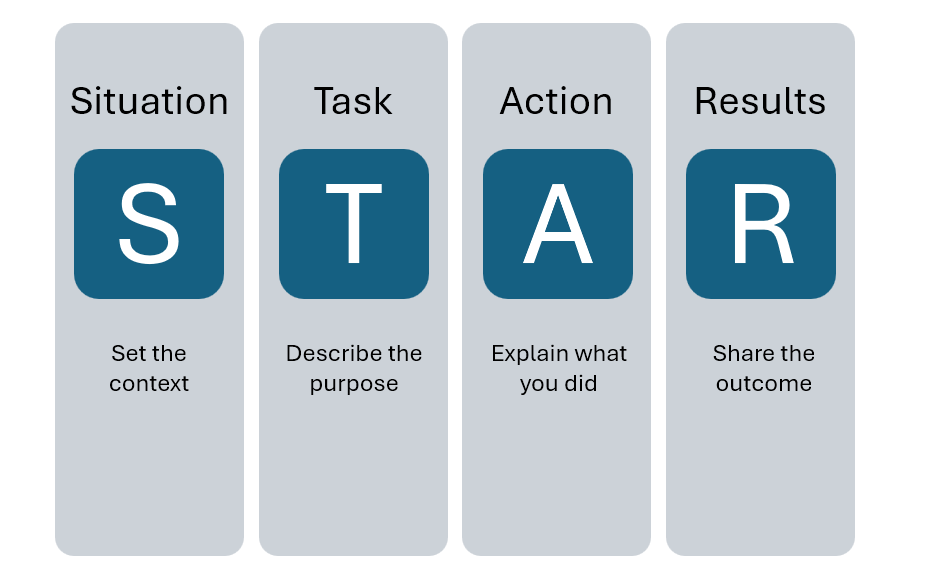

What is STAR?
STAR is an acronym for Story, Task, Action and Result. This is a useful tool that helps shape your interview into succinct responses to the questions. You can think of it like you are a skilled storyteller and each response conveys a specific message that highlights who are as a professional.
- S:What was the situation, problem, or conflict you were facing?
- T:What were you tasked with? What were your responsibilities or goals?
- A:What action did you take? What did you do to solve the problem? (start with action verbs)
- R:What was the result or outcome of your action? How did it benefit the organization? Can the result be quantified?
Why use STAR?
Using the STAR method helps you to structure your answers in a clear and concise manner. It helps you to stay focused on the question and avoid rambling. It also helps you to highlight your skills and accomplishments in a way that is relevant to the job you are applying for.
When do I use it?
The STAR method is most commonly used in behavioral interviews. Behavioral interviews are designed to assess how you have handled situations in the past. Employers believe that past behavior is a good predictor of future performance. Behavioral interview questions often start with phrases like "Tell me about a time when..." or "Give me an example of...". These questions are designed to elicit specific examples of your skills and experiences. Using the STAR method helps you to provide clear and concise answers to these questions.
How do I use it?
It can be universally agreed upon that behavioral questions are (one of) the toughest part of an interview. It can be hard to think of stories that would be useful in interviews as your mind is plagued with self-doubt about what you have or haven't done. Luckily there are plenty of ways to brainstorm! It's recommended that you try them all but find what works best for you.
- Research commonly asked behavioral interview questions and practice crafting your own stories
- Write down 4 to 5 stories and rehearse them
- Create a list of achievements, experiences, and challenges.
- To brainstorm stories if you're stuck, think of a time:
- had to pivot from one project to the next
- when you had to resolve a conflict
- when you spoke up and advocated for yourself
- when you had to learn a new skill quickly
What are some other resources?
UMSI has plenty of resources to help you brainstorm, craft, refine, and practice STAR stories. You can make appointments with peer coaches on UMSI Career Link. If you're not comfortable talking with a peer, then you can find advisors and other student services staff available by appointment.